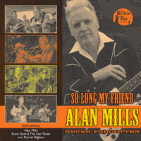

VA - So Long My Friend... Alan Mills Always Remembered (Compilation, 2017)
Rusti Steel and the Star Tones:
01 - So Long My Friend (It's Been An Honor) (3:50)
Darrel Higham (with Rusti Steel and the Star Tones):
02 - Just Bring Back Yesterday (2:46)
Darrel Higham (and the Western All Stars):
03 - The Hucklebuck (2:34)
Rusti Steel and the Star Tones:
04 - Bring My Baby Back Home (2:30)
05 - Wabash Cannonball (3:12)
06 - My Train's A Comin' (4:22)
© Western Star Recording Company :: [WSRC MLP10]
Notes
Review
349/366 (Project 366)
Kind of compilation tribute to Alan Mills. Very great people about the very fine artist.
The first composition sets the tone of importance, "So Long My Friend (It's Been An Honor)" by Rusti Steel and the Star Tones with its Country vibe is with so telling lyrics, honorable mind and just a topnotch thing. Then Darrel Higham show the best sides of old fashioned Rock'n'Roll and Rockabilly Pop, "Just Bring Back Yesterday" is a light and a bit nostalgic tune. Very glorious and kind one. Whereas "The Hucklebuck" is a direct dedication to Alan Mills by redoing this song, which was maybe the most famous of his songs performed.
The second part is reserved for Rusti Steel and the Star Tones recordings with feauring Alan Mills. "Bring My Baby Back Home" and "Wabash Cannonball" are nicely done Country swingin' Rockabilly songs with flavors of own artists' style. And "My Train's A Comin'" is a very good end for the compilation. A very memorable thing!